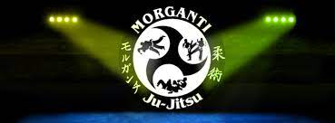

Quem somos
Nos meados dos anos 90 nasceu o Morganti Ju-Jitsu, o primeiro estilo de
Ju-Jitsu no Brasil, idealizado pelo Shidoshi Ricardo Morganti. Ricardo foi
introduzido ao Ju-Jitsu através do seu pai, Paulo Morganti que foi aluno
dos famosos irmãos Ono, uns dos responsáveis por trazer o Judô e o
Ju-Jitsu para o Brasil.

Nossa Missão
- Manter e preservar o Morganti Ju-Jitsu centralizado em uma única federação;
- Preservar, divulgar e formar os faixas pretas através de pesquisa bibliográfica e da formação dos seus conhecimentos intelectuais, e ainda preservar a sua propriedade intelectual;
- Promover competições em nível nacional, regional e Mundiais;
- Assegurar que os seus membros recebam a formação em acordo com o currículo, bem como um sistema de avaliação;
- Capacitar os faixas pretas ao redor do mundo para arbitrar campeonatos de todos os níveis;
- Promover junto com a sociedade preceitos marciais da não violência, hierarquia e altruísmo.